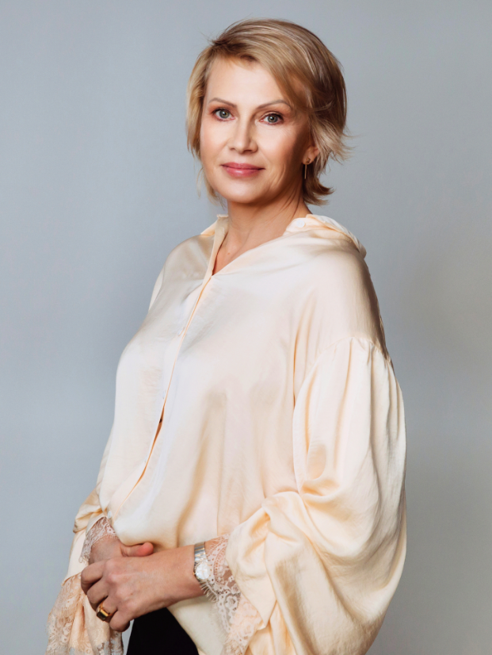
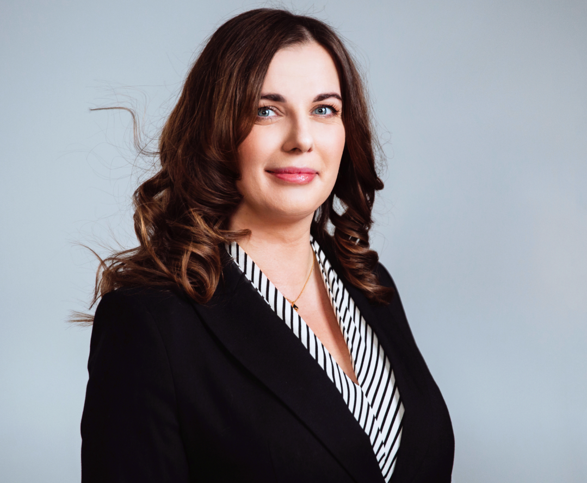

Berenda and Partners was founded from the need to pursue our professional passions in the environment that we create, shape, and look after.
Our previous experience is built of long years of working in recruitment companies that not only have equipped us with knowledge and needed contacts but also have shaped our thinking about the role of a headhunter. It may certainly sound like a cliché, yet we really like our work. This is due to the fact that we like people and everyone is important to us, even if they are not always the best candidate for a given role.
People bring great diversity to our work, teach us, and enable us to learn. Our clients make it possible for us to pursue passions, which we are extremely grateful for. Being aware of the trust we gained, we present a committed and a highly individual approach. We do not have to do anything – we can do anything because we shape our reality. This is a huge value thanks to which we can approach each challenge completely from scratch and without any burden. It is great pleasure to work not only for economy-building companies but also for organizations that change the world. It is a great privilege and joy.
Thank you for being with us.

Katarzyna Berenda-Ratajczyk, CEO
I've been recruiting since 1998, working as a consultant, a manager of the recruitment department, and finally a board member of one of the largest recruitment companies in Poland. In 2016, I decided to set up my own company to be able to do what I like in the environment that I create from scratch and develop according to my values. I specialize in recruitment of managerial staff in marketing, sales, and HR, mainly for pharmaceutical and FMCG companies in Poland and abroad. I also work for non-profit organizations and implement international projects for organizations involved in climate protection activities. I am a graduate of the University of Wroclaw and of the Pedagogical University of Krakow. The studies and completed courses have certainly given me a lot, but I have learned the most, and I am still learning, from the people I meet and work with.
In both work and private life I try to implement climate friendly solutions, use renewable energy sources and recycled materials and promote a lifestyle that is friendly to our planet and all life which inhabits it. Come rain or shine, I regularly visit the Shelter for Homeless Animals in Korabiewice, and I also encourage you to volunteer.

Kamila Klich
Board Member
I've been dealing with recruitment for the legal and financial sector for 14 years, that is from the beginning of my adventure with recruitment consultancy services. I purposely call professional work “an adventure,” because despite the ability to “read the map” and knowledge of the topography of the terrain there will always be something that makes the path to the destination demanding, interesting, or unusual.
My educational record data: completed studies in Journalism and Social Communication at the Jagiellonian University supplemented with postgraduate studies in Human Resources Management at the University of Warsaw. It shows that I am interested in people, their motivations, experiences, and passions. I have a few myself – biking definitely occupies most of my free time 🙂
"You must be the change that you wish to see in the world"-Mahatma Gandhi
We recommend coaching sessions to managers applying for a job in a particular company or looking for a new employer. The scope of work is set together with the participant, and then we support them in further work.